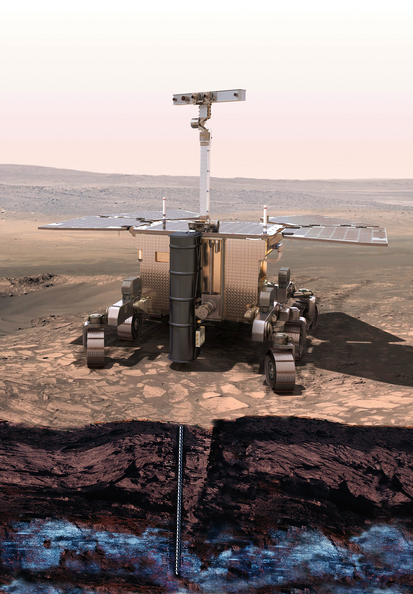

ExoMars 2018
The 2018 mission of the ExoMars programme will deliver an European rover and a Russian surface platform to the surface of Mars
The rover will travel across the martian surface to search for signs of life. The scientific mission of the rover consist in collect samples with a drill and analyse them with next-generation instruments.

Conditions for the Landing sites
Due the nature of the mission, one of the most important element to define the success of the mission, is the selection of the landing site for the rover.
The conditions that the selected landing site should have are the next ones:
It must be a geologically diverse and older than 3.6 billion years old.
It must be abundant that water was once present for extended periods or was frequently recurring at he site
Be a safe place for the own rover to land.
Defining the landing sites
To define the landing sites ESA put together the ExoMars Landing Site Selection Working Group (LSSWG), a group of scientists who deal with the science and engineering constraints that need to be verified before a landing site can be "certified" for the mission.
The landing sites of Mawrth Vallis 1 and Mawrth Vallis 2 are so close that can be considered as one site.
Candidate Landing Sites
Considering the mission's search-for-life objectives, the LSSWG has identified four landing sites that possess a clear, higher scientific interest.
These sites are within the latitude constraint. The ExoMars rover is designed to operate in the latitude range between 5° South to 25° North.
Aram Dorsum
Aram Dorsum is located on plains of middle Noachian age, about 4 billion years old, in a region that has been sculpted during two major aqueous periods. It comprises layered sedimentary rocks crossed by a prominent inverted channel ridge, which is 80 km long and 1.2 km wide.
The ancient lakes and rivers at this site would have been favourable for the development of life, as well as for the preservation of its biosignatures. The long-lived aqueous conditions recorded in the migrating channel pattern would have been critical for establishing a habitable environment at the Aram Dorsum site
Aram Dorsum
The High Resolution Stereo Camera
The High Resolution Stereo Camera (HRSC) is a camera experiment on Mars Express.At an altitude of 250 km from Mars, HRSC can produce images with a resolution of 2.3 meters/pixel of 2.35 kilometers square Mars Terrain.
Aram Dorsum
2018 landing site
The area where the rover will land have a shape of an ellipse.The landing site is an ellipse due the unpredictable factors that will affect the landing process like the surface wind or the velocity of the rover while landing.
The landing ellipe it will have a 104 km major axis and a 19 km minor axis.The orientation of the landing ellipse will change depending on when the launch takes place within a given launch window.
For the 2018 launch, the orientation of the landing ellipse can vary between 90° and 102° respect the North.
Aram Dorsum
2020 landing site
For the 2020 launch, the orientation of the landing ellipse can vary between 88° and 127° respect the North.
Hypanis Vallis
Hypanis Vallis is one of several valleys situated between two large outflow channels, Maja Vallis in the west and Shalbatana Vallis in the east.
Hypanis Vallis lies on an exhumed fluvial fan, thought to be the remant of an ancient river delta at the end of a major valley network.
Distinct layers of fine-grained sedimentary rocks provide access to material deposited about 3.45 billion years ago.
Hypanis Vallis
Landing site in Hypanis Vallis
Here, the landing ellipse are shown for the Hypanis Vallis site. For the next sites you have to remember that the yellow ellipses are for the 2018 launch and the blue ellipses are for the 2020 launch.
Oxia Planum
Why Oxia Planum?
The region is characterised by ancient highland cratered terrains that become increasingly eroded towards the highland-lowland boundary.
The candidate landing site area in Oxia Planum is located inside a shallow basin, at the outlet of the Coogoon Valles system. The region was chosen to include extensive, layered exposures rich in iron and magnesium phyllosilicates.
The main scientific concern for this site relates to the lack of precise information regarding the geologic context and origin of the clay-bearing unit. However, the phyllosilicate deposits are seen as the key to the study of aqueous activity on early Mars and the search for evidence of habitable environments early in the planet’s history.
Oxia Planum
HiRISE
The High Resolution Imaging Science Experiment (HiRISE) is a camera on board the Mars Reconnaissance Orbiter (MRO) and have a resolution of 0.3 m from an altitude of 300 km. One of the main goals of the MRO is to map the Martian landscape with it's high-resolution cameras in order to choose landing sites.
If you want to see Mars in high resolution...click the button and zoom to see the great difference between HRSC and HiRISE resolution !
Oxia Planum
Landing sites
More information regarding the landing sites
Mawrth Vallis
Why Mawrth Vallis?
This area contains a large outflow channel known as Mawrth Vallis, which once discharged huge amounts of water onto the northern plains. The proposed ExoMars landing site is situated just south of this channel.
The region surrounding Mawrth Vallis contains one of the largest exposures of phyllosilicates (clay minerals produced by chemical weathering) detected on Mars. These deposits provide a unique opportunity to evaluate aqueous activity on early Mars and point to the possibility that habitable environments may have existed during the Noachian period (from the formation of the planet to perhaps 3.6 billion years ago). Other deposits and outcrops in the region show the highest degree of mineral alteration identified so far on Mars.
Mawrth Vallis
HiRISE
Here we can see the HiRISE image of the Mawrth Vallis site. If you want to see Mawrth Vallis in detail, zoom into the image with the mouse or with the zoom controls.
Do you like what you see?
Mawrth Vallis
Landing sites
This area contains a large outflow channel known as Mawrth Vallis, which once discharged huge amounts of water onto the northern plains. The proposed ExoMars landing site is situated just south of this channel.
The region surrounding Mawrth Vallis contains one of the largest exposures of phyllosilicates (clay minerals produced by chemical weathering) detected on Mars. These deposits provide a unique opportunity to evaluate aqueous activity on early Mars and point to the possibility that habitable environments may have existed during the Noachian period (from the formation of the planet to perhaps 3.6 billion years ago). Other deposits and outcrops in the region show the highest degree of mineral alteration identified so far on Mars.
The End
Great explanation inside this chapterwith some incredible images and data